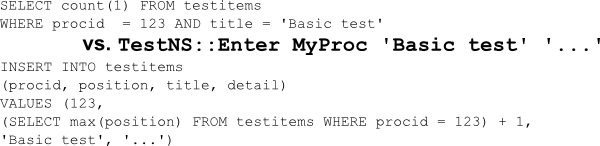
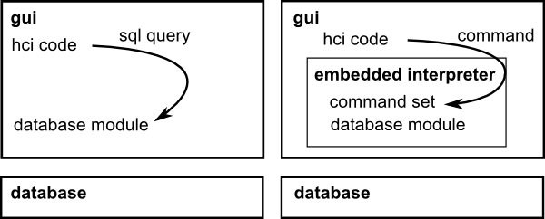
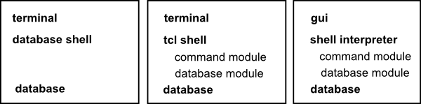

|
Abstract |
A command set is something you use in place of straight queries or an ORM. There are things about command sets that make them superior. The above command does nothing special, but simply takes over work from the GUI and gets it into a separate layer. (It is something like ORM but different.) I write command sets using Tcl. For me, they go between Qt and SQLite. The concept should be usable with most any stack. |
|
Exposition |
When I write an app, I jump between GUI and schema development. Maybe I do some GUI work and then make tables to put data into. Maybe I make some tables and then write the GUI to populate them. I will often have to refactor both. Sometimes development has flow and goes quick. Other times I need to first do the work in order to figure out what to do. If you also have such problems, read on. OK, suppose that you want to start working with your schema without writing the GUI. I mean, say you want to put data in there and work with it. Is that even possible? Yes, you can go into the database shell and type in SQL statements; that does have problems. Typing out SQL statements gets cumbersome and does not feel natural. You have to translate your intentions into SQL form. This is why command sets are good — instead of writing queries, you can make little commands that match how you work with the data. Tcl is nice for this because it has an interactive shell and everything is a string. Your set of little commands act like a CLI for your app's database schema. The terminal can be your GUI. Using command sets will also help you to not get stuck. How so? Maybe you do not know what you want the database schema to be. That is fine. First start sketching out commands to match your intentions. Once you get going you can figure the rest out. (Also, this lets you later change the schema but keep the same commands.) There is more about command sets, but let me keep this brief. I hope you now have a sense of this simple but nice idea. |
|
Open |
|
|
Meta |
What to do for a short piece? I thought: Relate a positive experience in such a way that would convince someone else to give it a try. Also, make it quick and easy to read. Stick to the limits (300 words for exposition, 500 total) and leave it open for the future. |